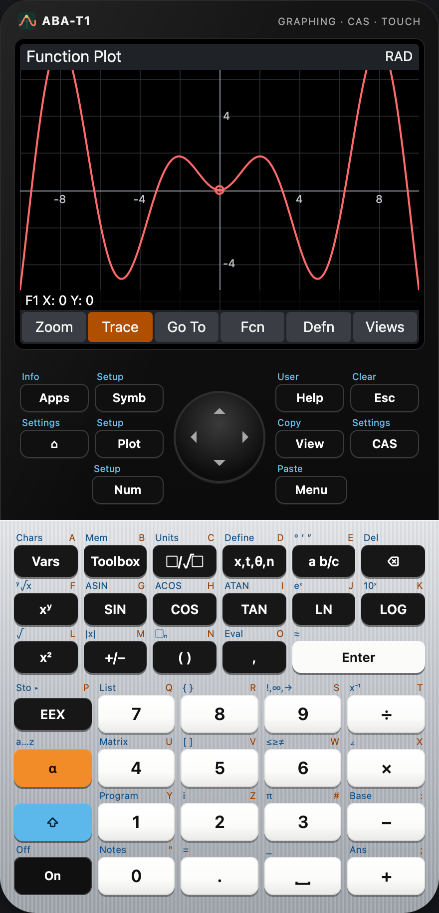
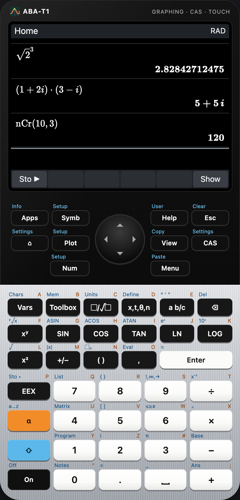
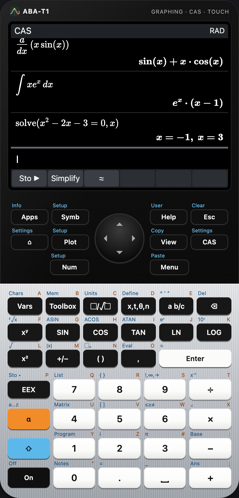
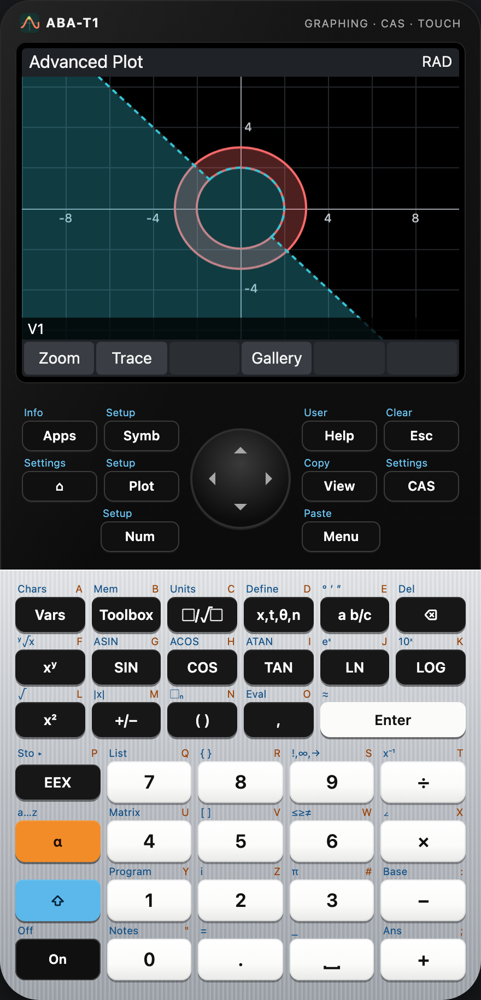
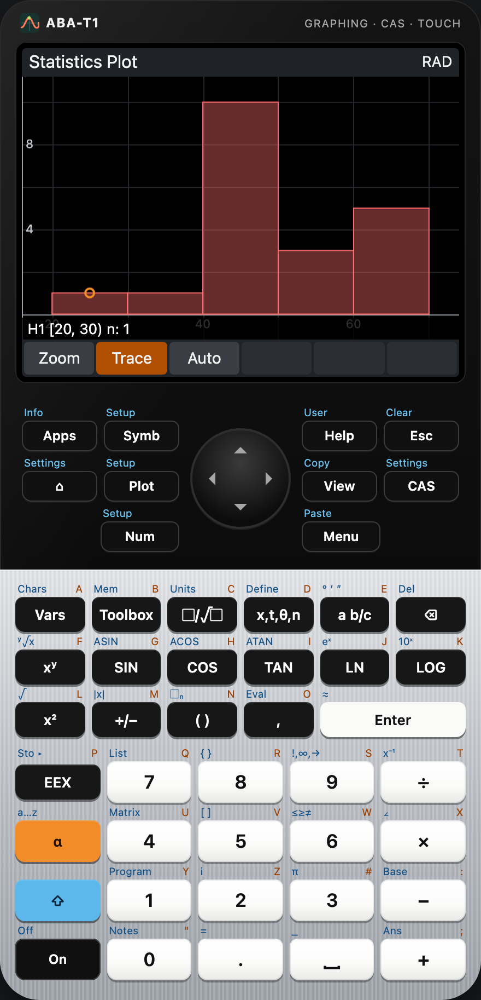
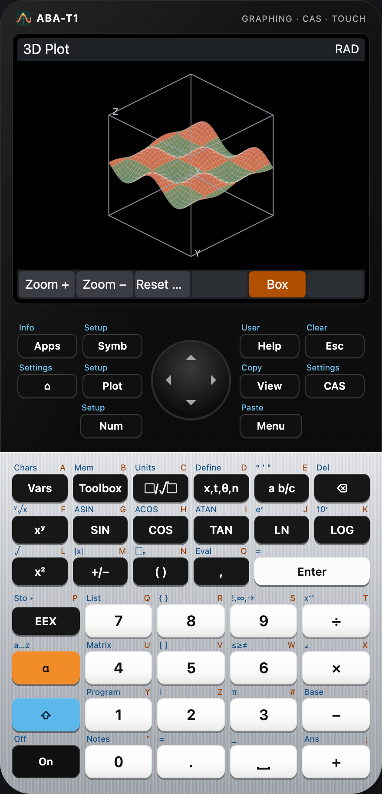
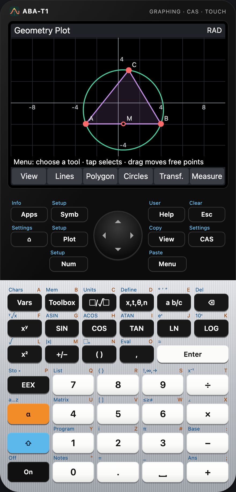
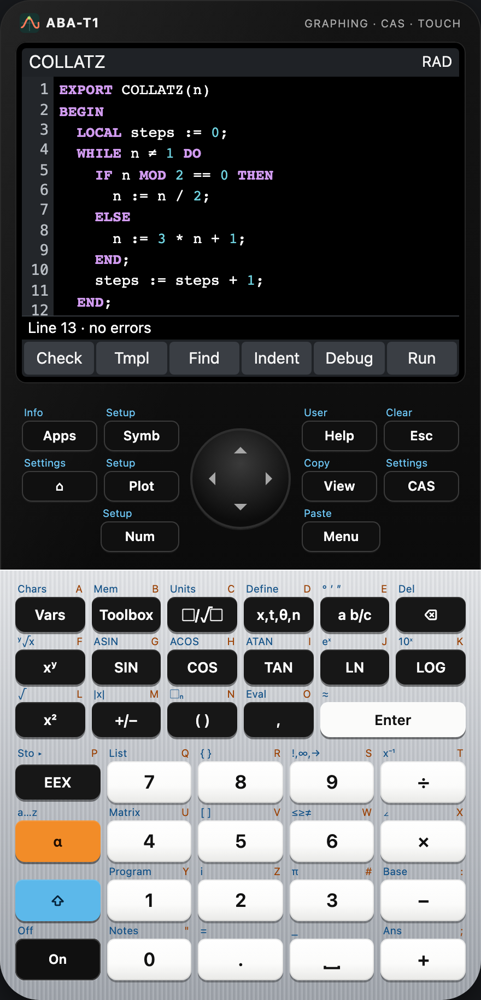
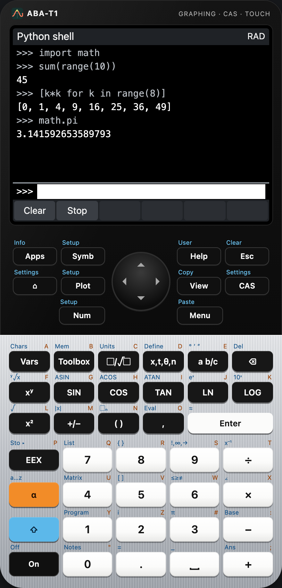

A graphing calculator you touch.
ABA-T1 brings a computer algebra system, twenty apps – function plots, statistics, geometry, 3D, finance, spreadsheet – a programming language and Python into one calculator. Tap the keys, drag the graph, pinch to zoom, or type on your keyboard.

- 20+ apps from Function to Python
- CAS with numerical checks of every answer
- 4 platforms: macOS, Windows, Linux, web
- Offline – no account, no tracking
Everything in one device
Each app has a symbolic, a plot and a numeric view, its own setups and can be saved as a copy. Results stay exact where they can and are marked as numeric where they cannot.

Home and RPN
Textbook entry with exact fractions and roots, complex numbers, units, based integers and an RPN stack – with a history you can scroll back through.

Computer algebra
Factor, expand, solve, differentiate and integrate symbolically. Every answer is checked numerically before it is shown.
Function plotter
Ten functions, trace, zoom by pinch or menu, roots, extrema, intersections and areas – as numbers you can trust.

Advanced graphing
Equations and inequalities in X and Y, drawn with interval arithmetic: shaded only where the relation surely holds.

Statistics and inference
Histograms, box plots and eight more charts, eleven regression models, hypothesis tests and confidence intervals.

3D graphing
Surfaces z = f(x, y), shaded by height, rotated by dragging and zoomed by pinching – no special graphics hardware needed.

Dynamic geometry
Points, lines, circles and conics that follow when you drag – with live measurements of lengths, angles and areas.

Programs
A structured language with EXPORT functions, an editor with highlighting, a debugger with breakpoints, user keys and your own apps.

Python
MicroPython in the calculator: a shell, scripts, math and cmath, drawing on the screen and access to the calculator variables.
Programming and your own apps
The calculator language
- EXPORT functions callable from the home view, LOCAL variables, IF, CASE, FOR, WHILE, REPEAT
- Lists, matrices, strings and the full function catalogue
- PRINT, INPUT, MSGBOX, CHOOSE, GETKEY and graphics on ten screens
- Editor with highlighting and templates, debugger with breakpoints, On stops a program
Python
- MicroPython running in the calculator, offline
- math, cmath, random, json – plus calc for the calculator variables
- graphic: pixels, lines, rectangles and text on the screen
- Shell with history, scripts with error lines
Get it
Use ABA-T1 right away in the browser – it installs as an app and works offline – or download the desktop version for macOS, Windows and Linux from the releases. The source code is on GitHub under the MIT license.